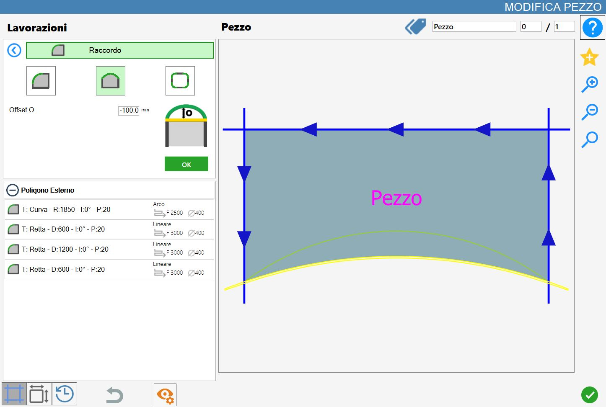

Mit dieser Funktion kann der Bediener an einem Eckpunkt oder einer Seite des Werkstücks eine Verrundung hinzufügen.
Die Benutzeroberfläche für diese Funktion sieht ähnlich wie in der folgenden Abbildung aus:

Parameter
Die Modi „Einzelner Eckpunkt“, „Seite“ und „Polygoneckpunkte“ schließen sich gegenseitig aus: Durch Aktivieren eines Modus werden die anderen automatisch deaktiviert.
 | Einzelner Eckpunkt |
 | Seite |
 | Polygoneckpunkte |
Parameter für „Einzelner Eckpunkt“ und „Polygoneckpunkte“
 | Radius R |
Parameter „Seite“
 | Offset 0 |
Ausführung der Bearbeitung
Die Bearbeitung kann angewendet werden, indem die Schaltfläche links neben dem entsprechenden Schnitt in der Polygonliste gedrückt wird.
Ein rotes Symbol mit einem „X“ zeigt an, dass die Bearbeitung nicht auf den gewünschten Schnitt angewendet werden kann.
Nachfolgend wird die Anwendung der Verrundungen in den verschiedenen Modi dargestellt. Eine Vorschau der Bearbeitung ermöglicht dem Bediener, das erwartete Ergebnis zu sehen. Die Bearbeitung wird erst nach Bestätigung mit der grünen Schaltfläche „OK“ tatsächlich angewendet.
!
Bei jeder Anwendung einer Verrundung gehen alle zuvor auf die Werkstückschnitte angewendeten Einstellungen verloren.
Ausführung Verrundung an einem einzelnen Eckpunkt
Bei Auswahl dieses Modus kann die Bearbeitung an einzelnen Eckpunkten des Werkstücks ausgeführt werden.
Damit die Bearbeitung korrekt angewendet wird, darf für den Parameter Radius kein negativer Wert eingestellt werden.
In der folgenden Beispielabbildung wurden drei Verrundungen mit einem Radius von 100,0 mm angewendet.

In der Schnittliste links ergeben sich bei jeder Anwendung einer Verrundung an einem Eckpunkt einige Änderungen:
Vorhandene weitere Bearbeitungen werden entfernt.
In die Liste wird eine Kurve, die neue Verrundung, eingefügt.
Die Längen der an den ausgewählten Eckpunkt angrenzenden Seiten werden um den durch den Parameter Radius festgelegten Wert verkürzt.
Ausführung Verrundung an einer Seite
Bei Auswahl dieses Modus kann die Bearbeitung an den Seiten des Werkstücks ausgeführt werden. Für Verrundungen in diesem Modus gibt es abhängig vom Wert des Parameters Offset zwei Hauptfälle: einen positiven und einen negativen Wert.
In der folgenden Beispielabbildung wurde am unteren Schnitt des ausgewählten Werkstücks eine Verrundung mit einem Offset von 100,0 mm angewendet.

Die folgende Abbildung zeigt das Gegenbeispiel zum vorherigen Fall: Am unteren Schnitt des ausgewählten Werkstücks wurde eine Verrundung mit einem negativen Offset von -100mm angewendet.

In der Schnittliste links ergeben sich bei jeder Anwendung einer Verrundung an einer Seite einige Änderungen:
Vorhandene weitere Bearbeitungen werden entfernt.
Der ausgewählte gerade Schnitt wird durch einen gekrümmten Schnitt ersetzt.
Bei einem positiven Wert des Parameters Offset besteht die eingefügte Verrundung aus einer zum ausgewählten Polygon hin nach innen verlaufenden Kurve, unabhängig davon, ob es sich um ein inneres oder äußeres Polygon handelt.
Bei einem negativen Wert des Parameters Offset besteht die angewendete Verrundung dagegen aus einer vom ausgewählten Polygon nach außen verlaufenden Kurve.
Ausführung Verrundung an den Eckpunkten des ausgewählten Polygons
In diesem Modus können so viele Verrundungen angewendet werden, wie das ausgewählte Polygon Eckpunkte hat.
Damit die Bearbeitung erfolgreich ausgeführt wird, darf kein negativer Radiuswert eingegeben werden.
Die folgende Abbildung zeigt die Bearbeitung an allen Eckpunkten des Werkstücks:

Wie beim Modus für einzelne Eckpunkte ergeben sich bei Verwendung dieses Modus einige Änderungen in der Schnittliste links:
Vorhandene weitere Bearbeitungen werden entfernt.
Der ausgewählte gerade Schnitt wird durch einen gekrümmten Schnitt ersetzt.
Bei einem positiven Wert des Parameters Offset besteht die eingefügte Verrundung aus einer zum ausgewählten Polygon hin nach innen verlaufenden Kurve, unabhängig davon, ob es sich um ein inneres oder äußeres Polygon handelt.
Bei einem negativen Wert des Parameters Offset besteht die angewendete Verrundung dagegen aus einer vom ausgewählten Polygon nach außen verlaufenden Kurve.